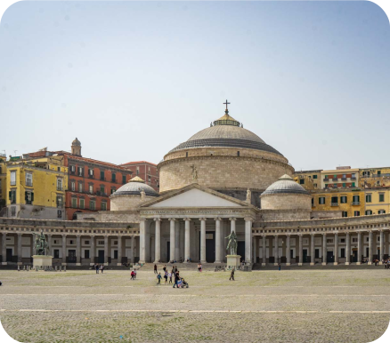

Storia di Napoli
Napoli non è una città costruita su un foglio bianco, ma un palinsesto infinito dove ogni secolo ha scritto la propria storia sopra quella del precedente.

Scopri di più
Patrimonio UNESCO
Nel 1995, il centro storico di Napoli è stato dichiarato Patrimonio dell'Umanità dall'UNESCO.
Con i suoi 1.700 ettari, è uno dei centri storici più grandi d'Europa e custodisce tesori artistici e architettonici di inestimabile valore, testimonianza delle diverse dominazioni che hanno plasmato la città nel corso dei secoli.
Scopri di più
Napoli oggi
Oggi Napoli vive un momento di straordinario fermento, dove la tradizione millenaria si fonde con le nuove tecnologie e l'arte urbana.